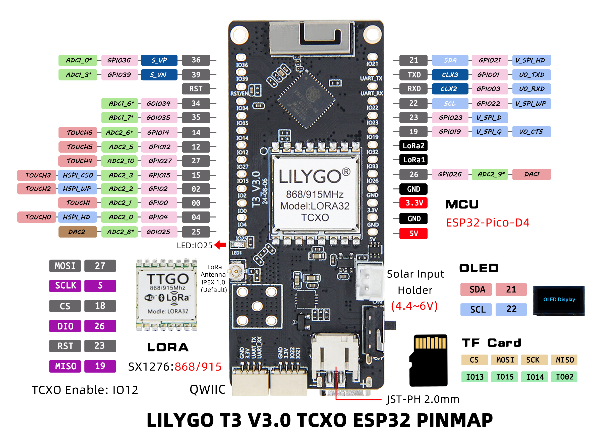
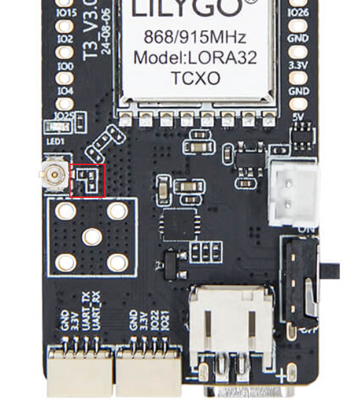

中文 简体
中文 简体LILYGO T3-TXCO

版本迭代
购买链接
| Product | SOC | FLASH | PSRAM | Link |
|---|---|---|---|---|
| T3-TXCO | ESP32-Pico-D4 | 4MB | 2MB | LILYGO Store |
目录
描述
LILYGO LORA32 TCXO 是一款基于 LoRa 技术的无线通信模块，支持 868/915MHz 双频段，适用于全球不同地区的物联网应用。该模块搭载温度补偿晶振（TCXO），显著提升了频率稳定性，适合在温差变化较大的环境中实现高精度通信。其设计集成了 LoRa 调制技术与 32 位微控制器，兼具长距离、低功耗的数据传输与本地处理能力，可广泛应用于智能农业、远程传感器、工业监控等场景。
预览
实物图

引脚图

模块
MCU
- 芯片：ESP32-Pico-D4
- PSRAM：2MB
- FLASH：4MB
- 无线：Wi-Fi + Bluetooth 4.2 + BLE
屏幕
- 类型：SSD1306 I2C OLED
- 接口：I2C
- 驱动芯片：SSD1306
无线通信
- LoRa：SX1276
- 频段：868MHz/915MHz
- 特性：温度补偿晶振（TCXO）
电源管理
- 供电：USB Type-C / 3.7V锂电池
- 太阳能输入：支持
- 电池开关：支持供电切换
概述
| 组件 | 描述 |
|---|---|
| MCU | ESP32-Pico-D4 |
| FLASH | 4MB |
| PSRAM | 2MB |
| 屏幕 | SSD1306 I2C OLED |
| LoRa | SX1276 (868/915MHz) |
| TCXO | 温度补偿晶振 |
| 存储 | TF 卡扩展 |
| 无线 | Wi-Fi + Bluetooth 4.2 + BLE |
| USB | 1 × USB Port (TYPE-C接口) |
| 扩展接口 | 2 × QWIIC 接口 |
| GPIO接口 | 2.54mm间距 2×13 扩展IO接口 |
| 天线接口 | 天线座子接口 + SMA天线接口 |
| 电源选项 | USB/3.7V锂电池/太阳能输入 |
| 按键 | 1 x RESET 按键 + 1 x BOOT 按键 |
| 安装孔 | 2 × 2mm 定位孔 |
| 尺寸 | 66 × 27 × 13 mm |
快速开始
示例支持
| Example | PlatformIO/Arduino | ESP-IDF | Description |
|---|---|---|---|
| LoRa_Communication | ✓ | LoRa通信示例 | |
| OLED_Display | ✓ | OLED显示示例 | |
| TCXO_Stability | ✓ | TCXO稳定性测试示例 | |
| Battery_Power | ✓ | 电池供电示例 | |
| Solar_Power | ✓ | 太阳能供电示例 |
PlatformIO
- 安装VisualStudioCode，根据你的系统类型选择安装。
- 打开VisualStudioCode软件侧边栏的"扩展"（或者使用Ctrl+Shift+X打开扩展），搜索"PlatformIO IDE"扩展并下载。
- 在安装扩展的期间，你可以前往GitHub下载程序，你可以通过点击带绿色字样的"<> Code"下载主分支程序，也通过侧边栏下载"Releases"版本程序。
- 扩展安装完成后，打开侧边栏的资源管理器（或者使用Ctrl+Shift+E打开），点击"打开文件夹"，找到刚刚你下载的项目代码（整个文件夹），点击"添加"，此时项目文件就添加到你的工作区了。
- 打开项目文件中的"platformio.ini"（添加文件夹成功后PlatformIO会自动打开对应文件夹的"platformio.ini"）,在"[platformio]"目录下取消注释选择你需要烧录的示例程序（以"default_envs = xxx"为标头），然后点击左下角的"√"进行编译，如果编译无误，将单片机连接电脑，点击左下角"→"即可进行烧录。
Arduino
- 安装 Arduino IDE
- 安装 Arduino ESP32
- 将
lib目录中的所有文件夹复制到Sketchbook location目录中。如何查找库文件位置，请参阅此处- Windows:
C:\Users\{用户名}\Documents\Arduino - macOS:
/Users/{用户名}/Documents/Arduino - Linux:
/home/{用户名}/Arduino
- Windows:
- 打开相应示例
- 打开已下载的
LilyGo-LoRa-Series文件夹 - 打开
examples文件夹 - 选择示例文件并打开后缀为
ino的文件
- 打开已下载的
- 在 Arduino IDE 工具菜单中选择对应开发板型号，点击下方列表中的对应选项进行选择
| Name | Value |
|---|---|
| Board | ESP32 Dev Module |
| Port | Your port |
| CPU Frequency | 240MHZ(WiFi/BT) |
| Core Debug Level | None |
| Erase All Flash Before Sketch Upload | Disable |
| Events Run On | Core1 |
| Flash Frequency | 80MHZ |
| Flash Mode | QIO |
| Flash Size | 4MB(32Mb) |
| JTAG Adapter | Disabled |
| Arduino Runs On | Core1 |
| Partition Scheme | Huge APP (3MB No OTA/1MB SPIFFS) |
| PSRAM | Enable |
| Upload Speed | 921600 |
| Programmer | Esptool |
- 请根据您的开发板型号取消
utilities.h文件中对应型号的注释，例如T3_V3_0_SX1276_TCXO，否则编译将报错 - 上传程序
开发平台
引脚总览
| Name | GPIO NUM | Free |
|---|---|---|
| OLED(SSD1306) SDA | 21 | ❌ |
| OLED(SSD1306) SCL | 22 | ❌ |
| SD CS | 13 | ❌ |
| SD MOSI | 15 | ❌ |
| SD MISO | 2 | ❌ |
| SD SCK | 14 | ❌ |
| LoRa(SX1276) SCK | 5 | ❌ |
| LoRa(SX1276) MISO | 19 | ❌ |
| LoRa(SX1276) MOSI | 27 | ❌ |
| LoRa(SX1276) RESET | 23 | ❌ |
| LoRa(SX1276) DIO0 | 26 | ❌ |
| LoRa(SX1276) DIO1 | 32 | ❌ |
| LoRa(SX1276) CS | 7 | ❌ |
| LoRa(SX1276) TCXO EN | 12 | ❌ |
| Battery ADC | 35 | ❌ |
| On Board LED | 25 | ❌ |
相关测试
功耗
| Firmware | Program | Description |
|---|---|---|
[T3-TXCO_V3.0][LoRa_Transmit]_firmware_V1.0.0.bin |
LoRa传输 |
功耗: 待补充 |
[T3-TXCO_V3.0][WiFi_Active]_firmware_V1.0.0.bin |
WiFi活跃 |
功耗: 待补充 |
[T3-TXCO_V3.0][Deep_Sleep]_firmware_V1.0.0.bin |
深度睡眠 |
功耗: 待补充 |
TCXO性能
| 温度范围 | 频率稳定性 | 描述 |
|---|---|---|
| -40°C ~ +85°C | ±0.5ppm | TCXO温度补偿性能 |
| 25°C | ±0.2ppm | 常温下频率精度 |
| Features | Details |
|---|---|
| RF Module | SX1276 |
| Frequency range | 840～945MHz |
| Transfer rate(LoRa) | 0.018K～37.5Kbps |
| Transfer rate(FSK) | 1.2K～300Kbps |
| Modulation | FSK, GFSK, MSK, GMSK, LoRa，OOK |
常见问题
Q. 如何调节外接天线电阻？
A. 参考下图调整电阻方向实现调节外接天线的电阻：
Q. TCXO相比普通晶振有什么优势？
A. TCXO（温度补偿晶振）在温度变化时能保持更高的频率稳定性，适合环境温度变化大的应用场景。Q. 支持哪些供电方式？
A. 支持USB Type-C供电、3.7V锂电池供电和太阳能输入，可通过电池开关切换。Q. LoRa通信距离是多少？
A. 在理想条件下，通信距离可达数公里，具体取决于环境因素和天线配置。Q. 为什么我的板子烧录失败？
A. 请按住"BOOT"按键同时按"RST"按键，然后释放"RST"按键，进入下载模式后重新下载程序。